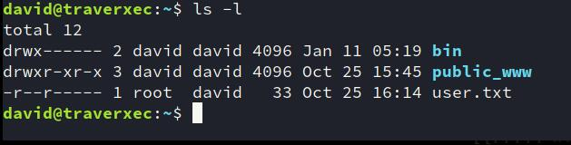

HackTheBox 上面的一台简单的机器，这是自己第一台拿到权限的active机器，很兴奋
Happy Hacking
www-data
首先nmap扫描发现开了80和22端口
80端口运行着nostromo服务，并且存在着一个2019年的CVE
直接使用searchsploit搜索就可以找到
1 | searchsploit nostromo |
网上也可以搜相关的EXP
1 | HOST="$1" |
运行的时候
1 | ./exp.sh 10.10.10.165 80 ls /var/nostromo/ |
这样执行命令，之后就相当于获得到了www-data 的权限
下面需要提权
david
在nostromo的文件夹下看到了一个配置文件夹，里面有nhttpd.conf
文件的内容如下：
1 | # MAIN [MANDATORY] |
具体nostromo有一些特性
在nostromo的man手册中有提到一点，其中的HOMEDIRS下的选项
有一个功能是可以直接在web中访问到home目录下的用户文件夹
可以看到配置文件中写道了可以直接访问/home目录
因此我们在浏览器中直接访问
1 | http://10.10.10.165:80/~david/ |
实际上访问的目录就是/home/david
在终端中直接尝试查看这个目录下的内容是看不到的（没有读权限）
但是看到homedirs_public这个值，这个是任何用户都可以直接访问的
因此直接在终端中
1 | ./exp.sh 10.10.10.165 80 ls -la /home/david/public_www |
在这里面可以找到一个protected-file-area
里面包含了一个tar压缩包
将这个压缩包解压，里面包含了一个.ssh, 内容为公私钥
解压这个包的时候使用的命令是
1 | tar -xf XXXXX.tar -C /tmp |
因为直接解压默认的目录是/home下，这个目录我们是没有权限去写的，因此使用-C可以指定目录
私钥的内容是加密过的，没有办法直接连接，需要首先破解passphrase
手动写一个脚本来爆破
1 | from subprocess import PIPE, Popen |
就是直接用python对字典中的词进行尝试，破解得到ssh私钥的pass为hunter
下面直接连接，即可获得david的权限
1 | ssh david@10.10.10.165 |
其实也可以使用john来爆破key，首先使用ssh2john将其转换为john可以爆破的内容，之后直接用john和字典就可以
root
首先做的事情就是查看david的目录下有没有比较有用的内容
发现david的目录下的结构

这个bin目录下的server-status.sh比较有趣

运行这个脚本可以看到

发现最后一行是使用了sudo运行journalctl这个程序
但是却没有需要输入david的密码，因此如果可以获得这个程序本身的权限就可以得到root的权限了
我们仿照脚本里最后一行运行
1 | /usr/bin/sudo /usr/bin/journalctl -n5 -unostromo.service |
这样也不需要输入密码，最后也是进入了sudo权限的less中
在less中可以类似vim那样使用!来执行外部的程序


done!
总结
总结一下这个靶机中学到的新知识
- nostromo 存在的漏洞
- nostromo存在一个可以直接用web访问到用户文件夹的特性
- journalctl、less的提权方法
- 使用脚本爆破ssh加密key的方法